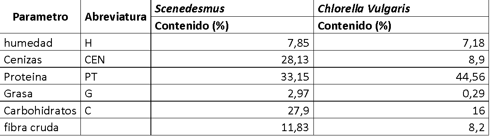
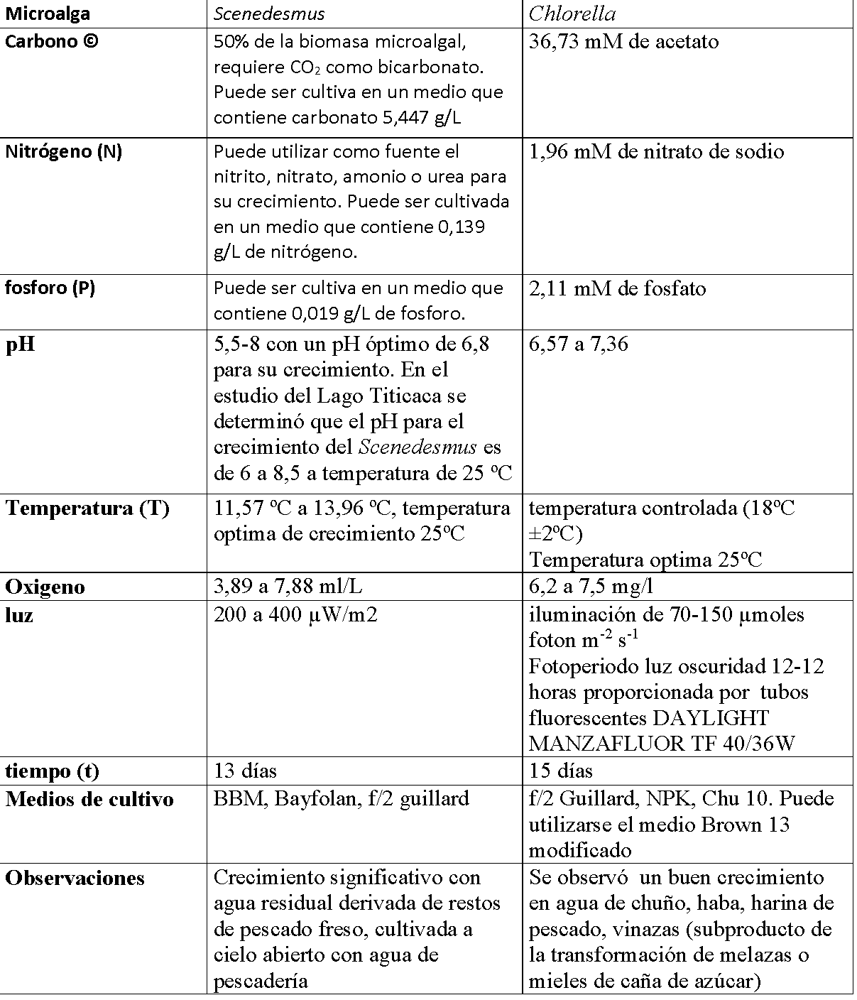

Cultivo de Scenedesmus
El género Scenedesmus posee 29 especies y una gran cantidad de variedades aun no definidas. En el Lago Titicaca se identificaron 4 especies Scenedesmus quadricauda, Scenedesmus ecornis, Scenedesmus protuberans y el Scenedesmus sp.
Huancollo Chambi, (2018) menciona que: el Scenedesmus se desarrolla adecuadamente en un medio estrictamente inorgánico sin la necesidad de un factor orgánico, así también señala los principales nutrientes requeridos para su crecimiento. En su investigación utiliza el medio de cultivo F/2 Guillard , el BBM (Bold`s basal Medium) y el abono Foliar o Bayfolan.
El Scenedesmus requiere macronutrientes como el carbono que es el más importante, constituye el 50% de la biomasa microalgal, ya que esta microalga es fotoautrofa es decir que requiere carbono inorgánico para vivir, pudiendo utilizar como fuente el CO2 o el bicarbonato. Así también, necesita el nitrógeno, puede utilizarse el nitrato, nitrito, amonio o urea como fuente de nitrógeno para su crecimiento siendo preferente el nitrato para cultivos masivos. El NO3Na es más eficiente para el desarrollo de la microalga . En cuestión al pH el Scenedesmus tolera entre 5.5 a 8 siendo 6.8 como pH óptimo para su crecimiento, la temperatura de crecimiento puede variar entre 20 ºC. En cuestión al oxigeno sobreviven entre 3.89 ml/L a 7.88 ml/L, en cuestión al rango de intensidad de luz es de 200 a 400 µW/m2. (Huancollo Chambi, 2018)
Cultivo de Chlorella
La Chlorella es una microalga que tiene células circulares su tamaño oscila entre 2 a 10 micras y sus cloroplastos presentan pigmentos fotosintéticos principales clorofila a y b, los cuales tienen un pico de absorción máximo alrededor de 430 nm y de 675nm (Jimenez Tafur, 2017).
La Chlorella vulgaris puede ser cultivada fácilmente bajo condiciones in vitro, planteándose varias aplicaciones para su cultivo a nivel industrial, además puede ser utilizado como alimento por su alto contenido en proteínas (45-60%), grasa (20%), carbohidratos (20%), minerales, sales y vitaminas (15%), además esta microalga es rica en calcio , magnesio y hierro , teniendo un alto contenido de clorofila , carotenoides y diferentes vitaminas (B1, B2, B6, B12,C y E)(Jimenez Tafur, 2017).
Según las investigaciones realizadas por (Gómez Luna, 2007) los cultivos de Chlorella vulgaris a escala de laboratorio, crecen de forma adecuada con iluminación de 70-150 µmoles foton m-2 s-1 , proporcionada por tubos fluorescentes DAYLIGHT MANZAFLUOR TF 40/36W, con ritmo nictimeral 12:12 a temperatura ambiente o en cámara con temperatura controlada (18ºC ±2ºC) y aireación constante aun flujo promedio de 2L/min-1 , siendo la última alternativa la más factible. Como medio de cultivo para el mantenimiento y desarrollo de los cultivos puede utilizarse el medio Brown 13 modificado.
La composición química de la biomasa de Scenedesmus sp y Chlorella se observa en la siguiente tabla:

El Requerimiento para el cultivo de las microalgas es el siguiente:
